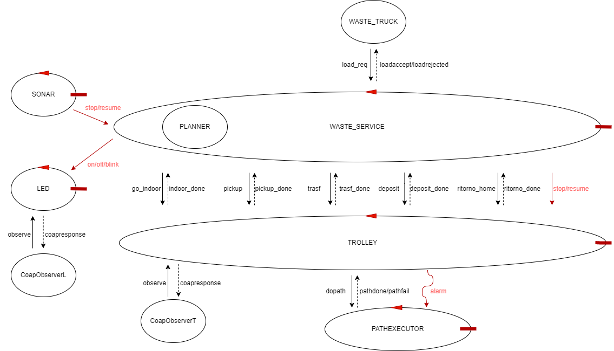
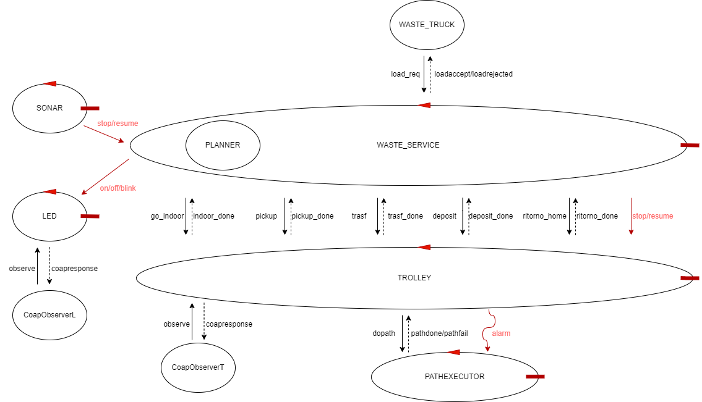

Introduction
Progetto finale del corso di studio Ingegneria dei sistemi software M, Laurea Magistrale Università di Bologna. (SPRINT 3)
Sprint 2 results
Di seguito é riportato il risultato finale ottenuto al termine dello Sprint 2:

CODICE: Contesto WASTE_SERVICE e TROLLEY
Contesto Raspberry
TEST: Test WASTE_SERVICE
Test LED

CODICE: Contesto WASTE_SERVICE e TROLLEY
Contesto Raspberry
TEST: Test WASTE_SERVICE
Test LED
Requirements
Per la parte di requisiti si veda la sezione Requirement dello Sprint 1
Requirement analysis
PUNTI APERTI:
- La GUI deve avere un particolare design?
- In che forma deve essere rappresentato lo stato del TROLLEY?
STATO TROLLEY, LED E BOX
La GUI deve monitorare lo stato di TROLLEY, LED e Box perció é necessario analizzare come ottenere tali informazioni.
Per le considerazioni fatte su Requisiti funzionali e Requisiti non funzionali si vedano i paragrafi dedicati nello Sprint 1
COMPONENTI A DISPOSIZIONE
Viene fortinto il software esemplificativo per la realizzazione della GUI.PROBLEMATICHE RF3
In questo Sprint ci concentreremo solamente sul RF3.Problem analysis
PROBLEMATICHE RF3 EVIDENZIATE DURANTE L'ANALISI DEI REQUISITI
STATO TROLLEY, LED E BOX
Attualmente, nel modello realizzato nello Sprint 1, lo stato del TROLLEY é noto a due entitá, ossia il TROLLEY stesso e il WASTE_SERVICE. Con l'introduzione del RF2, peró bisogna considerare un nuovo stato in cui il TROLLEY si puó trovare, lo stato STOPPED. La problematica che sorge é chi é a conoscenza dello stato reale del TROLLEY e quindi chi andare ad interrogare per conoscerlo. In particolare:- TROLLEY: é sempre a conoscenza dello stato in cui si trova. D'altro canto peró in questo caso il TROLLEY deve comunicare il suo stato agli interessati (LED). In base a come viene effettuata la comunicazione il TROLLEY puó perdere la caratteristica di essere un attuatore e puó non essere rispettato il requisito che il WASTE_SERVICE deve pilotare il LED ("Durante questa attività il WasteService fa lampeggiare il Led.").
- WASTE_SERVICE: nel modello attuale esso puó inferire lo stato in cui si trova il TROLLEY in base allo stato in cui esso stesso si trova. Aggiungendo lo stato STOPPED peró, é necessario che il WASTE_SERVICE riceva le informazioni di quando fermare e riavviare il TROLLEY sulla base delle distanze rilevate dal SONAR.
CONCLUSIONI
Visto che il WASTE_SERVICE é il responsabile del comportamento che il LED deve assumenre in ogni istante, é consigliato che anche le informazioni che riguardono lo stato del TROLLEY siano mantenute e aggiornate dal WASTE_SERVICE stesso. In questo modo il TROLLEY non deve neanche occuparsi della gestione del LED, mantenendo la caratteristica di attuatore.SOLUZIONE PROPOSTA
Dopo l'analisi appena effettuata proponiamo una possibile soluzione, che a nostro parere incorpora la maggior parte dei vantaggi:Gli obiettivi sono quelli di mantenere il TROLLEY come attuatore e di modellare il WASTE_SERVICE come controllore del sistema. Esso riceve dal SONAR il comando di stop/resume, in modo tale da poter memorizzare lo stato in cui trova il TROLLEY prima dello stop.
Successivamente il WASTE_SERVICE invierá il comando appena ricevuto dal SONAR al TROLLEY, il quale, se si trova in uno stato di movimento, dovrá emettere l'evento alarm per notificare lo stop anche al pathexecutor. Oltre al comando stop/resume, il WASTE_SERVICE dovrá anche pilotare il comportamento del LED tramite l'invio del comando on/off/blink.
Inoltre viene introdotta un'ulteriore request-response per gestire l'introduzione del nuovo stato "go_indoor". Infine il payload del comando resume che arriva al TROLLEY conterrá l'indicazione dello stato da cui ripartire.
ARCHITETTURA LOGICA
La soluzione che quindi proponiamo presenta la seguente architettura logica:CODICE: Contesto WASTE_SERVICE e TROLLEY
Contesto Raspberry
TEST: Test WASTE_SERVICE
Test LED
Non é necessario effettuare test sul SONAR in quanto si utilizza il software fornito dal committente.

Test plans
In questo Sprint sono state realizzate due test unit per verificare il corretto funzionamento delle entitá che
compongono il sistema, in particolare:
- Test LED: in questo caso viene sfruttatto il fatto che il LED sia una risorsa COAP. Infatti viene introdotto un osservatore COAP che monitora lo stato del LED, sostanzialmente viene inviato un comando al LED e si verifica che lo stato in cui si trova sia quello corretto.
- Test WASTE_SERVICE: in questa test unit si verifica il corretto funzionamento del WASTE_SERVICE, che funge da controller del sistema. Vengono sfruttati due osservatori COAP per monitorare rispettivamente lo stato del TROLLEY e del LED. Viene simulato un comando del SONAR di stop/resume e si va a verificare che le due entitá si trovino nello stato atteso.
Project
Fino ad adesso abbiamo rappresentato, per facilitá di notazione, il SONAR come un unico attore. In realtá
esso é implementato mediante una pipeline di attori. In particolare, come si puó evincere dall'immagine sottostante,
esso é composto dai seguenti attori:

Per quanto riguarda il LED,invece, abbiamo deciso di realizzare una nostra versione ispirandoci al codice fornito dal committente per esigenze implementative. Nel dettaglio il LED é modellato come un attore e sfrutta gli script bash forniti dal committente per accendere (led25GpioTurnOn) e spegnere (led25GpioTurnOff) il LED.
Inizialmente é stata realizzata una prima versione per verficare la corretta comunicazione tra Raspberry e il resto del sistema. In essa le componenti SONAR e LED erano simulate: Modello eseguibile.
Nella versione successiva invece sono stati introdotti LED e SONAR fisici : Modello eseguibile.
- sonarHCSR04Support2021: utilizza il SonarAlone fornito dal committente per ottenere le distanze rilevate dal sonar fisico e le immette nella pipeline.
- dataCleaner: filtra le distanze passate dal sonarHCSR04Support2021, considerando solo quelle comprese in un determinato range. Questo é necessario in quanto il sonar fisico é realizzato per rilevare distanze non troppo elevate.
- distanceFilter: processa le distanze provenienti del dataCleaner inviando, quando é necessario, il dispatch di stop/resume al WASTE_SERVICE (distanza superiore o inferiore a DLIMIT).
Per quanto riguarda il LED,invece, abbiamo deciso di realizzare una nostra versione ispirandoci al codice fornito dal committente per esigenze implementative. Nel dettaglio il LED é modellato come un attore e sfrutta gli script bash forniti dal committente per accendere (led25GpioTurnOn) e spegnere (led25GpioTurnOff) il LED.
Inizialmente é stata realizzata una prima versione per verficare la corretta comunicazione tra Raspberry e il resto del sistema. In essa le componenti SONAR e LED erano simulate: Modello eseguibile.
Nella versione successiva invece sono stati introdotti LED e SONAR fisici : Modello eseguibile.
Testing
I test utilizzati per verificare il corretto funzionamento del sistema sono quelli riportati nella sezione
"Test plans"
Final summary
É stato introdotto un osservatore COAP per segnalare che il LED, essendo modellato come un attore, é anche una risorsa COAP.
Questa caratteristica é giá sfruttata in fase di test, ma potrebbe risultare un'alternativa interessante per quanto riguarda i requisiti affrontati negli Sprint successivi.

Questa caratteristica é giá sfruttata in fase di test, ma potrebbe risultare un'alternativa interessante per quanto riguarda i requisiti affrontati negli Sprint successivi.
Davide Filoni email: davide.filoni2@studio.unibo.it
Fabio Scagliarini : fabio.scagliarini@studio.unibo.it
Filippo Comastri : filippo.comastri2@studio.unibo.it
Link git
Fabio Scagliarini : fabio.scagliarini@studio.unibo.it
Filippo Comastri : filippo.comastri2@studio.unibo.it
Link git